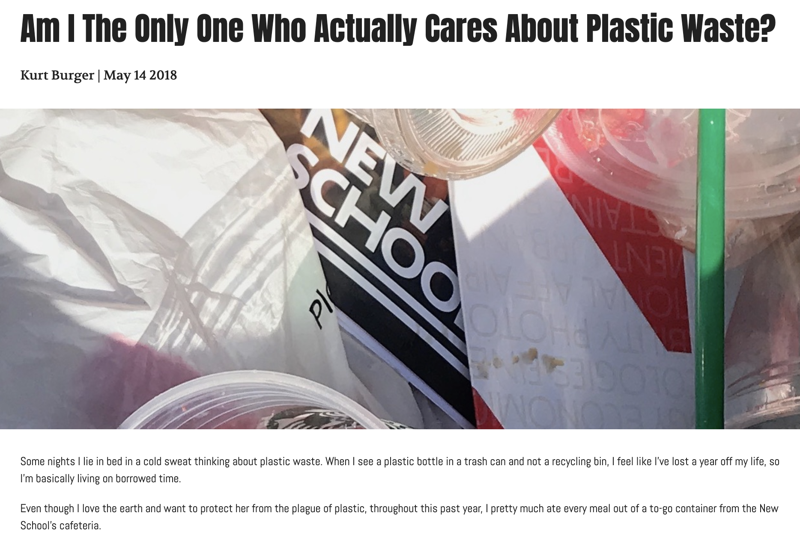
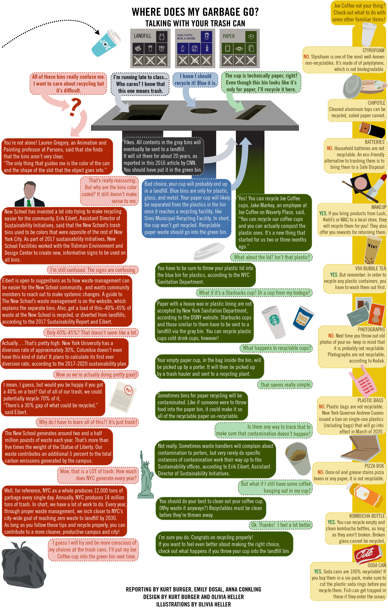

by Kurt Burger
9 May 2019
For whatever reason, last year, during my News Narrative and Design II class, I suddenly (?) began to care about plastic waste. I became really conscious of whatever I was throwing away, and not throwing away, and I felt like I was one of the only people in the world who felt that way
And the gag is? I still feel that way. I wrote a piece for that class about how sometimes I get literally filled with panic and anxiety thinking about all the trash that is just sitting somewhere (where it will sit for like.... ever) and it was alright. The piece was alright not my morbid anxiety.
SO in my final assignment I briefly interviewed Erik Eibert, who is the Assistant Director of Sustainability at the New School and he gave me some good quotes. I still wasn't satisfied though. (I hardly ever am).
Anyways. School for the year ended and I went out into the world, lugging my recyclables from my workplace (which doesn't recycle... at all), and using my bamboo fork for all of my to-go food from the Meatpacking District. Away from school I wasn't as angry. Which was weird. Because the New School places so much importance on sustainability you'd think I'd be more angry just living in a world where everyone else doesn't have to be responsible about their waste.
AND THEN!!! It hit me! I discovered what makes me so upset!! It's seeing the P L E T H O R A of recycling bins with kind of understandable "how to recycle" signs
It truly fills me with rage. Seeing my peers. Take their starbucks cups... and just.. throw them away. LIKE???? JUST RECYCLE IT!! IT'S NOT THAT HARD
WASH IT OUT... BARELY
AND PUT IT IN THE BLUE BIN!!!
Of course I can't just .. yell at people... SO I decided to write ANOTHER article. This time using the platform of the New School Free Press
As a student journalist, I HATTEEE it when I am restricted in using the style of traditional journalism. It's a good skill to have, but I don't think that's where I am headed. I truly Can NOT imagine writing like that for every piece. SO in the lab environment of the New School Free Press, I was able to try and use my voice (an untraditional one, if that's not clear) in my recycling piece. (Which I will henceforth be referring to as Baby).
I tried at first to write just a written, run of the mill, online piece for NSFP, but I realized through conversations with my colleagues and advisors, that NO ONE wants to read a boring ass article (voice or no voice) about recycling!!!
Talking about trash is boring and no one wants to do it. Except me!
Eventually, I decided that I wanted to create some sort of a flow chart, in which the reader would be presented with a hypothetical trash scenario, and different off shoots of the that event would provide them with information about their choice at the can!
In theory, we could have done it. But it wasn't really making sense and ther wasn't that much space on the website/page to create an actualy flow chart.
Then I got to thinking... what if the trash can is having a conversation with you. Like what if when you throw your coffee cup into the trash, it yells at you for making the wrong decision. (so I don't have to yell at the reader).
And thus... my chart conversation poster thing was born.
Unfortunately the piece only exists in print at the moment, but should soon be uploaded to the New School Free Press Website, but for you, my loyal fans, I will upload the final result on this very git-hub site.
Isn't she pretty?!
In my other class, Design for Journalists, we were tasked with creating a booklet, and I thought utilizing my STELLAR reporting and design skills that helped create my beautiful baby could be a major part of the project
In the end, I created a folded booklet that sets up the conversations had in the chart.
That's right!! You heard me!!! The booklet OPENS UP!! to reveal!! the CHART ON THE BACK!!!
I am very proud of my work on this booklet (I've never designed much before!) and cannot wait to spread the word across campus.
My booklet is not for sale but I do accept donations!